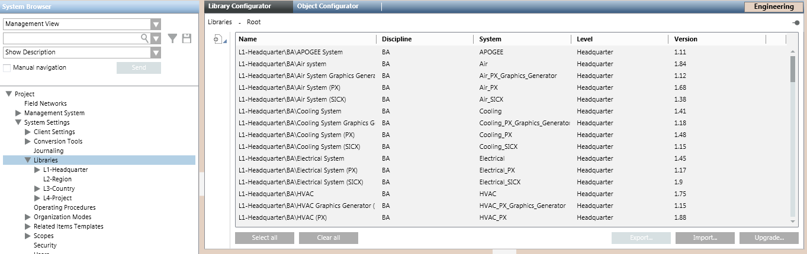
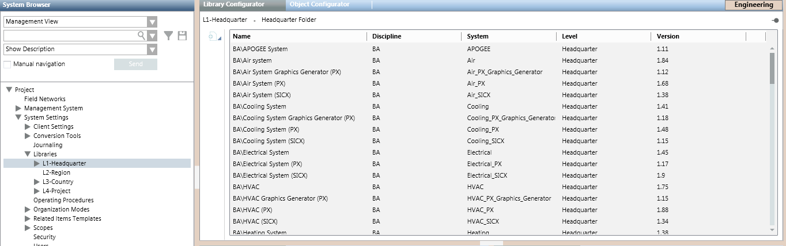
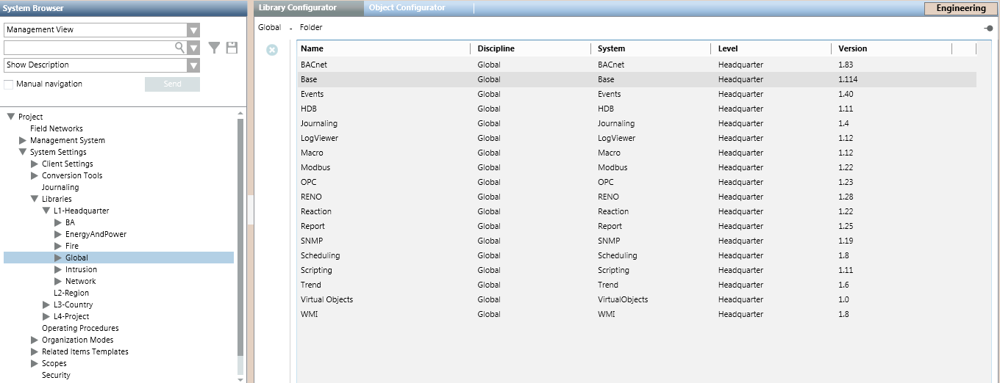
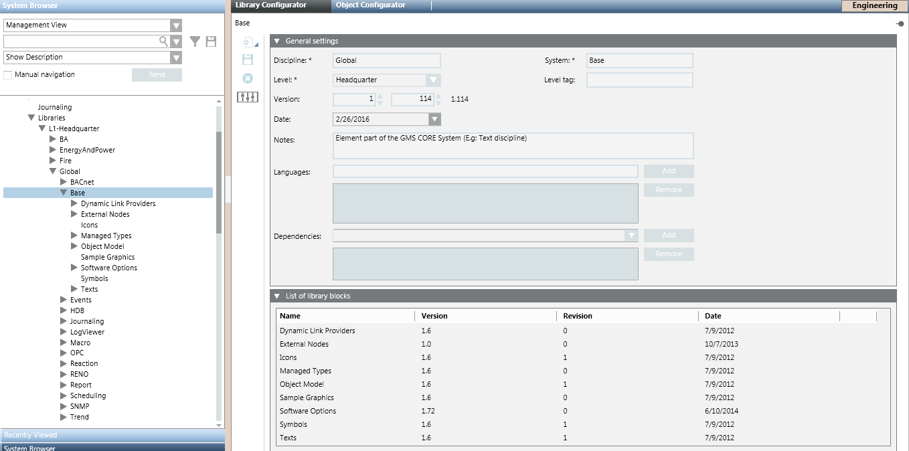
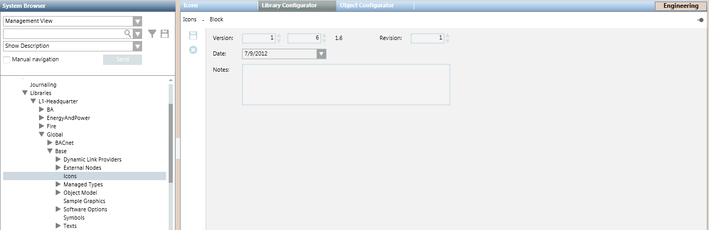

Library Configurator Workspaces
In Engineering mode, when you select an element of a library structure, the Library Configurator tab displays a configuration workspace. The types of controls provided vary depending on the specific level in a library structure that you select: Libraries (main folder), L1, L2, L3 or L4 (library level folders), library, or block.
Main Libraries Folder Workspace
Selecting the main Libraries folder causes the Library Configurator tab to display a full list of all the libraries available in the project. From here, authorized experts can create new libraries, as well as import, export, or upgrade libraries.

Library Configurator Controls [Main Libraries Folder] | |
| Description |
| Add a new library at your allowed customization level. See Manually Creating a New Library. |
Select All | Use these buttons, along with clicking individual libraries in the list, to help you select which libraries you want to export to a GMS file. |
Export | Export the libraries selected in the list to a GMS file. See Export a Library. This button is available only if you have selected at least one library in the list. |
Import | Browse for a GMS file containing the libraries you want to import into this project. See Import a Library. |
Upgrade | Browse for a folder containing the GMS file with new versions of some existing libraries that you want to upgrade. See Upgrade a Library. |

Library Level Workspace
Selecting one of the library levels (L1-Headquarter, L2-Region, L3-Country, or L4-Project) causes the Library Configurator tab to display a list of all the libraries in that level.

Library Configurator Controls [Level] | |
| Description |
| Add a new library at this level. During the library creation process you can also create a discipline folder under which the library will be placed. |
(Only for L2, L3, and L4 levels) Copy the localization texts from the available parent level, from L3 up to L1, into the customized libraries of the current level. | |
Library Folder Workspace
Selecting a folder (for example, Global) causes the Library Configurator to display a list of all the libraries located under that folder.
Here, authorized experts can only delete libraries form the discipline folder. To add libraries to a discipline folder it is instead necessary to select a Library level, or the main Libraries folder. See Manually Creating a New Library.

Library Configurator Controls [Library Folder] | |
| Description |
| Delete the selected folder. See Deleting a Block, Library, or Folder. |
(Only under L2, L3, and L4 levels) Copy the localization texts from the available parent level, from L3 up to L1, into the customized libraries in the current folder. | |

Library Workspace
Selecting a library (for example, Events) causes the Library Configurator to display the General Settings and the List of library blocks for that library. Here, authorized experts can modify or delete the selected library.

Library Configurator Controls [Library] | |
| Description |
| Add a new block to this library. See Adding Blocks to a Library. |
| Delete this library. See Deleting a Block, Library, or Folder. |
| Customize this entire library to a lower level. The structure of the library will be cloned at your allowed customization level. |
| Save any changes made to this library. |
(Only under L2, L3, and L4 levels) Copy the localization texts from the available parent level, from L3 up to L1, into the customized library. | |
General Settings expander | Edit the version information of this library if needed. |
List of library blocks expander | A read-only list of all the blocks contained in this library. |


Library Block Workspace
Selecting a library block (for example, Icons) causes the Library Configurator tab to display the version information of the block. From here, authorized experts can update this information if needed, or delete the block altogether.
NOTE: To configure the actual contents of a library block, you must work in the other tabs provided in the Primary pane.

Library Configurator Controls [Library Block] | |
| Description |
| Delete this block from the library. See Deleting a Block, Library, or Folder. |
| Save any changes made to this library block. |
Revision, Date, Note | If required, use these fields to update the version information of the block. See Updating the Version Information of a Library Block. |